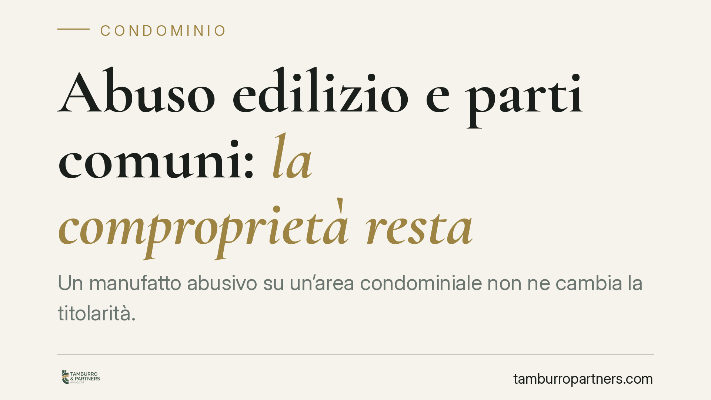

Abuso edilizio e parti comuni: la comproprietà resta
Un manufatto abusivo su un'area condominiale non ne cambia la titolarità. La Cassazione conferma che la natura di parte comune dipende dal titolo costitutivo e dalla destinazione funzionale, non dalla regolarità urbanistica delle opere realizzate. Una precisazione che incide su liti tra condomini, aggiudicatari e vicinato in materia di comproprietà.

Il caso
La vicenda nasce da una controversia sulla titolarità di un'area su cui insisteva un'opera priva di titolo edilizio. Una proprietaria aggiudicataria rivendicava un diritto esclusivo, mentre il vicinato ne affermava la natura condominiale. Dopo la pronuncia della Corte d'appello, la questione è approdata in Cassazione, che ha fissato un principio netto: l'abuso edilizio non ha alcun effetto sull'appartenenza del bene al condominio.
Inquadramento normativo
Il riferimento è l'art. 1117 del Codice civile, che elenca le parti dell'edificio comuni a tutti i condomini "se non risulta il contrario dal titolo". La norma individua le parti comuni in base a due criteri: la previsione del titolo costitutivo del condominio (l'atto che dà origine alla comunione, tipicamente il primo atto di frazionamento) e la destinazione funzionale del bene al servizio comune.
La Cassazione ribadisce che questi due parametri operano su un piano diverso da quello urbanistico. La regolarità o meno di un'opera dal punto di vista edilizio riguarda il rapporto con la pubblica amministrazione (sanzioni, ordini di demolizione, sanatorie). Non tocca invece la questione, di natura civilistica, di chi sia proprietario del bene. Un manufatto abusivo resta di proprietà comune se comune era l'area su cui sorge; un manufatto regolare non diventa esclusivo solo perché autorizzato.
Implicazioni pratiche
La distinzione ha conseguenze concrete. Chi acquista in asta o rivendica un uso esclusivo non può fondare la propria pretesa sull'irregolarità edilizia dell'opera altrui, né sull'assenza di titoli. Allo stesso modo, un condomino non perde la quota di comproprietà sulle parti comuni per il solo fatto che vi siano state realizzate opere abusive.
Per il condominio questo significa che la sorte urbanistica di un'opera abusiva (l'eventuale demolizione o la sanatoria) va gestita separatamente rispetto alla questione della titolarità. Le due vicende possono correre in parallelo, ma non si condizionano.
Un ulteriore effetto riguarda l'onere probatorio. Chi sostiene la natura esclusiva di un bene incluso nell'elenco dell'art. 1117 deve dimostrare che il titolo costitutivo prevede il contrario. Non basta invocare fatti materiali sopravvenuti, come la costruzione abusiva o l'uso di fatto prolungato nel tempo, per superare la presunzione di comproprietà.
Cosa fare in concreto
- Verificate il titolo costitutivo. Prima di rivendicare o contestare la natura di un bene, recuperate il primo atto di frazionamento e il regolamento condominiale: sono lì che si stabilisce cosa è comune e cosa è esclusivo.
- Distinguete i due piani. Trattate la questione urbanistica (abuso, sanatoria, demolizione) come separata da quella della proprietà. Non impostate una causa civile di rivendica sull'irregolarità edilizia altrui.
- Documentate la destinazione funzionale. Quando il titolo tace, raccogliete elementi che provino l'effettiva funzione del bene al servizio comune o esclusivo (planimetrie, uso storico, collegamenti impiantistici).
- Valutate la sanatoria a monte. Se l'opera abusiva insiste su parte comune, coinvolgete l'assemblea: le decisioni sulla regolarizzazione riguardano tutti i comproprietari.
- In caso di acquisto in asta, esaminate con attenzione la perizia e la situazione delle parti comuni prima di formulare offerte fondate su presunti diritti esclusivi.
La pronuncia riafferma un principio di ordine: la proprietà condominiale si legge nel titolo e nella funzione del bene, non nella conformità edilizia delle opere. Un chiarimento utile a evitare contenziosi impostati su presupposti sbagliati.
---
Contributo informativo a cura di Tamburro & Partners - Avv. Giuseppe Tamburro. Non costituisce parere legale.
Ogni condominio ha una storia a sé.
Se gestisci un'amministrazione e vuoi un confronto su una specifica questione condominiale, scrivi allo studio. Ti rispondiamo entro un giorno lavorativo.